Local PHP development, without Docker.
PIPanel runs Nginx, several PHP versions, MySQL or MariaDB, trusted HTTPS and *.test domains for your Laravel and PHP projects. Install once, then work without opening a terminal or typing sudo.
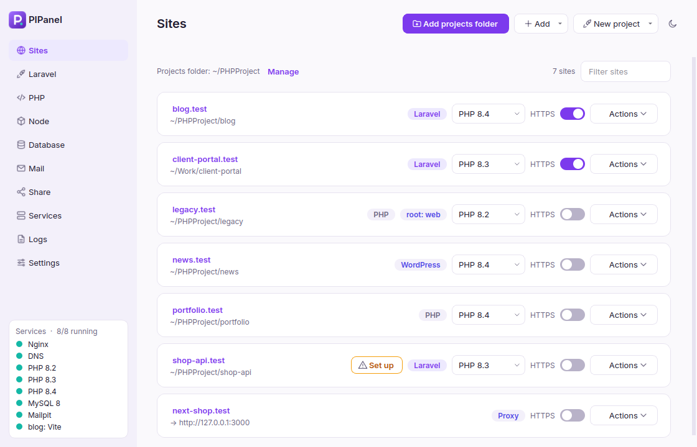
- No Docker
- Runs as your user
- Many PHP versions side by side
- Light and dark theme
Everything a PHP project needs, in one window
Drop a project in a folder and it is served at name.test. Pick its PHP version, turn on HTTPS, create a database, share it with a client. The services keep running when you close the app.
Sites on .test
Choose a projects folder and every subfolder becomes a site within seconds, even with the app closed. Link single folders, proxy a name to another dev server, and change the web root of any site.
Several PHP versions
Install PHP 8.2 to 8.5 side by side and choose a version per site; in a site folder, php and composer use that version. Only the versions in use run. Extensions, php.ini and Xdebug without root.
Laravel built in
Create a project, or set up one cloned from Git in one click. Run Vite, the queue worker and the scheduler in the background. Install packages such as Telescope, Livewire or Pest with one click.
MySQL or MariaDB
Pick the engine that matches your production server. Back up, import and clone databases, write a project's .env, and open phpMyAdmin or Adminer, signed in already.
Trusted HTTPS
One toggle gives a site a certificate your browser trusts (through mkcert), so secure cookies, OAuth callbacks and service workers behave like production. Optional.
Node.js versions
Install and switch Node versions with fnm. Folders with a .node-version or .nvmrc switch automatically in bash and zsh.
Share a site
Give a client a public link to a local site: a Cloudflare quick tunnel needs no account, or use ngrok with a token the panel verifies first.
Services and Doctor
Start and stop every service, read logs, and get a notification with the reason and a Restart button when one crashes, for example because another program holds port 80.
Mail and Redis
Mailpit catches every email your apps send in an inbox at mailpit.test. Redis runs for cache, queues and Horizon. Both fill in a project's .env.
Find anything
Press Ctrl+K and type a few letters to open a site, its folder, VS Code or a terminal, or to run an action. Built for hundreds of sites.
From the terminal
The pipanel command does the everyday things without opening the window: pipanel isolate 8.2, pipanel secure, pipanel share, pipanel status.
Never lose a task
Installs run in the background and every one stays listed with its result. Package installs wait for each other so they never collide; everything else runs in parallel.
Real services, managed for you
PIPanel is a friendly control panel for ordinary Linux software. Nothing is hidden in a container, and everything it starts runs as your user through systemctl --user.
Because the services are systemd user units, they survive closing the window, restart on failure, and write logs you can read in the app. The only thing that needs administrator rights is the one-time setup and installing or removing packages, and that goes through a small, fixed-purpose helper (see Files and security).
A calm, modern interface
Light, dark, or follow your system. These are the real windows, shown with sample data.
Sites: every folder in your projects folder is a site. Choose its PHP version and HTTPS; everything else is in the Actions menu. A cloned project shows Set up.
Install
PIPanel is tested on Linux Mint 22.3 (Ubuntu 24.04 base, Cinnamon). It needs a systemd-based Debian/Ubuntu system with apt and systemd-resolved, and Python 3.10 or newer.
$ sudo apt install -y git python3-venv python3-pip libxcb-cursor0
$ git clone https://github.com/pahrulirfan/PHP-DevTools.git
$ cd PHP-DevTools
$ ./install.shinstall.sh creates a virtual environment, installs the app, adds PIPanel to your application menu, and installs the small root helper (this is the only step that asks for your sudo password).
Open PIPanel from the menu and click Run setup in the banner. A system password dialog appears once. Setup then:
- adds the
ondrej/phprepository and installs Nginx, dnsmasq, mkcert and PHP with the extensions Laravel needs; - turns off the system copies of Nginx, MySQL and PHP-FPM, so only PIPanel's own instances run;
- lets programs started by your user listen on ports 80 and 443, and routes
*.testto PIPanel's DNS; - creates a local certificate authority for trusted HTTPS, installs Composer, and starts the services.
To update PIPanel later, run git pull and ./install.sh again, then quit PIPanel from the tray menu and open it again.
You can read exactly what runs as root in packaging/pipanel-helper. It is one short file that accepts a fixed list of commands.
Your first site
- Open Sites and click Add projects folder. Choose the folder that holds your projects, for example
~/PHPProject. - Every subfolder is now a site:
~/PHPProject/blogis served athttp://blog.test. Click its name to open it. - Need a new app? Click New project and choose Laravel or WordPress. PIPanel creates it, creates a database, fills in
.env(orwp-config.php) and finishes the install. - Cloned a project from Git? Put it in the projects folder: it appears by itself, marked Set up. One click installs its dependencies and prepares
.envand the database.
Sites
- Projects folder. Every subfolder becomes
folder-name.test. Names are lower-cased and spaces become dashes. You can have several projects folders, and change or remove them in Settings. - New folders appear by themselves. A folder watcher (a systemd path unit) serves a new folder within seconds, also while the app is closed, and keeps watching a project that is still being unpacked (
laravel new,git clone) until it can tell its type. DNS needs nothing: every*.testname already points to your computer. A removed folder stops being served. - Link one folder. Serve a single folder under a name you choose, wherever it lives (Add → Link one folder).
- Proxy to a local port. Add → Proxy to a local port serves another development server, such as Vite, Next.js, a Go or a Python app, at
name.test, with HTTPS if you like. WebSockets (hot reload) pass through. - PHP version and HTTPS stay on the card, because they tell you the state of the site at a glance. Turning HTTPS on also updates
APP_URLin a Laravel project's.envwhen it pointed at this site. - Actions holds everything else: open in the browser, VS Code, a terminal or the file manager, the Laravel page, the logs, share publicly, change the web root, and remove a link.
- Set up. A Laravel project without
vendor/or.env(typical right aftergit clone) shows a Set up button. It runscomposer installwith the site's PHP version, creates.envfrom.env.examplepointed at the PIPanel database, generatesAPP_KEY, creates the database named in.env, then runs the migrations or imports a.sql/.sql.gzdump from the repository (your choice), runsstorage:linkand optionallynpm install. Every step is shown with its result. - Many sites. With more than a handful of sites a filter box appears, and the cards come in pages of 20. Ctrl+K finds any site from anywhere.
If Nginx or DNS is stopped, a banner appears with a Start services button.
Laravel
Pick a Laravel project and manage its packages. Composer and artisan run with that site's PHP version, so a project on PHP 8.2 never gets packages resolved for 8.4.
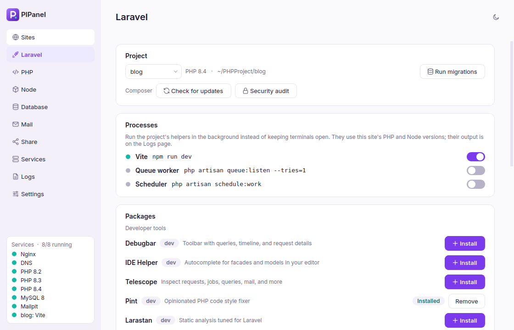
- One-click packages: Debugbar, IDE Helper, Telescope, Pint, Larastan, Livewire, Breeze, Sanctum, Socialite, Spatie Permission, Horizon and Pest. Installed ones are detected from
composer.jsonand can be removed. - Any other package: type
vendor/packageorvendor/package:^1.0, optionally as a dev dependency. - Run migrations runs
php artisan migrate --force. New projects use the database for sessions, so the tables must exist before the first page loads (creating a project from PIPanel does this for you). - Processes. Toggle Vite (
npm run dev, with the project's Node version), the queue worker (queue:listen), the scheduler (schedule:work), and Reverb or Horizon when the project uses them. They run as systemd user units, keep running when the window closes, and their output is on the Logs page. They never start at login by themselves. - Composer checks. Check for updates runs
composer outdated --direct, Security audit runscomposer audit.
WordPress: Sites → New project → WordPress downloads WordPress with WP-CLI, creates its database and wp-config.php, runs the installer and shows the admin user and password. Passwords are passed to WP-CLI through its input, never on a command line. wp is also available in your terminal.
PHP
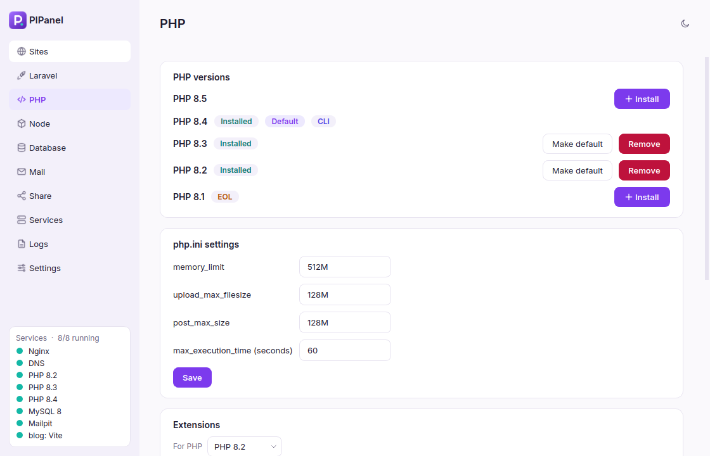
- Versions. Install or remove 8.2 to 8.5 (8.1 is listed but end-of-life). The default version is used for new sites and for the
phpcommand outside your sites. - The terminal follows the site. Inside a site's folder,
php,composerandphp artisanrun with that site's PHP version, like Herd.PIPANEL_PHP=8.2 php -vpicks one explicitly, andpipanel whichtells you which applies. - Only what is used runs. PHP-FPM runs for the versions that a site (or the default) uses; a version no site uses is stopped and starts again as soon as a site needs it.
- php.ini values.
memory_limit,upload_max_filesize,post_max_sizeandmax_execution_time. Values are validated, and the upload size also sets Nginx's request limit. - Extensions. Like a normal Ubuntu install, every extension of the installed packages is enabled; untick to disable. Names in bold are required by Laravel and Composer, and PIPanel asks before disabling them. A drop-down offers common extras such as
redis,imagickandxdebug. - Xdebug. Install it per version and turn it on only while you debug (it slows every request down). It listens for your editor on port 9003; Create launch.json adds a "Listen for Xdebug" configuration to a project for VS Code.
- Composer is installed as the official
composer.pharafter its checksum is verified.
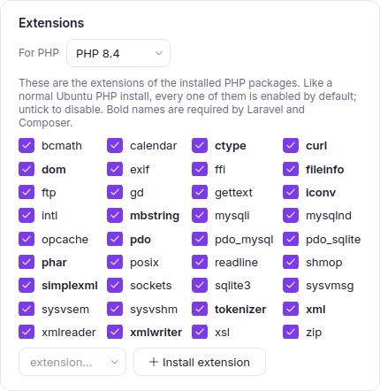
All of this lives in your home folder. PIPanel never edits /etc/php; it gives each PHP version its own conf.d folder instead.
Node
Installs fnm, then lets you install, remove and choose the default Node version. The shell integration (a clearly marked block in ~/.bashrc, ~/.zshrc and ~/.profile) switches versions automatically when you enter a folder with a .node-version or .nvmrc file. Turn it off and the block is removed cleanly.
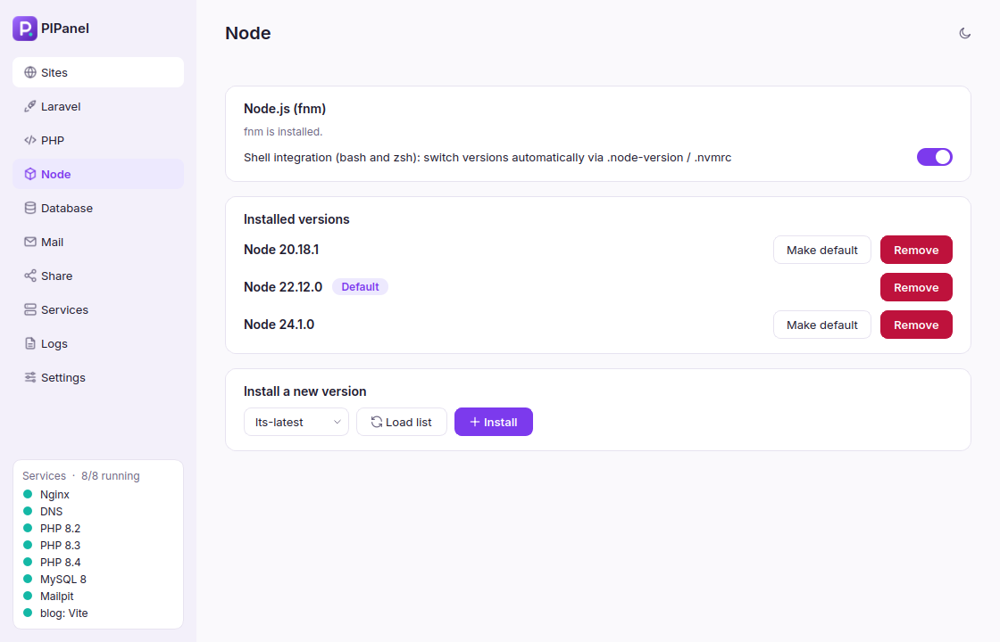
Database
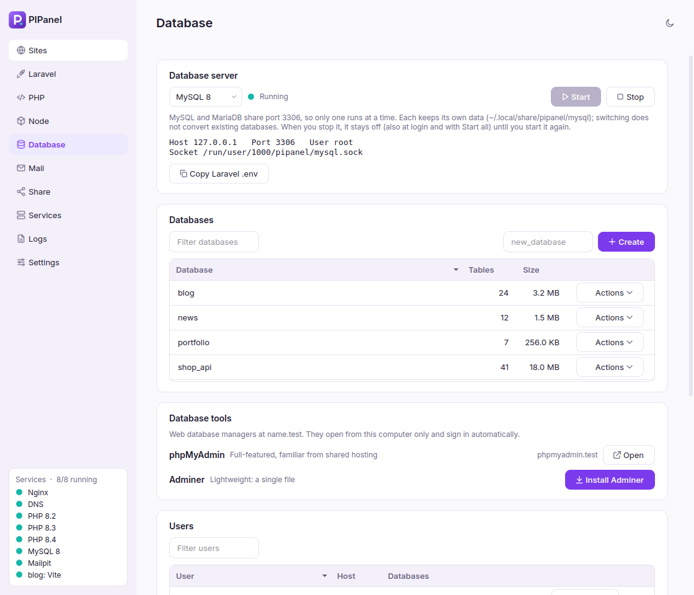
- Engine. Choose MySQL 8 or MariaDB to match your production server. They share port 3306, so only one runs at a time, and each keeps its own data folder. Switching does not convert existing databases.
- Databases are a table with their number of tables and size, sortable by any column, with a filter and pages for long lists. Each row's Actions menu opens it in phpMyAdmin or Adminer, writes the connection into a Laravel project's
.env, backs it up as.sql.gz, imports a.sqlor.sql.gzfile, clones it (for exampleblogtoblog_test), or deletes it. - Database tools. phpMyAdmin and Adminer install with one click and open at
phpmyadmin.testandadminer.test, signed in as root already. They answer only this computer. phpMyAdmin 5.2 supports PHP up to 8.3, so it runs with the newest installed version it supports. - Users are a table too, showing which databases each one may use, with Change password and Delete. Change the root password in its own card.
- Copy Laravel .env puts the connection settings on your clipboard (
DB_CONNECTION=mysqlworks for both engines).
The server listens on 127.0.0.1 only. The root password is stored in a private file (mode 0600) and is never put on a command line. Backups go to ~/.local/share/pipanel/backups unless you choose another place.
Mail and Redis
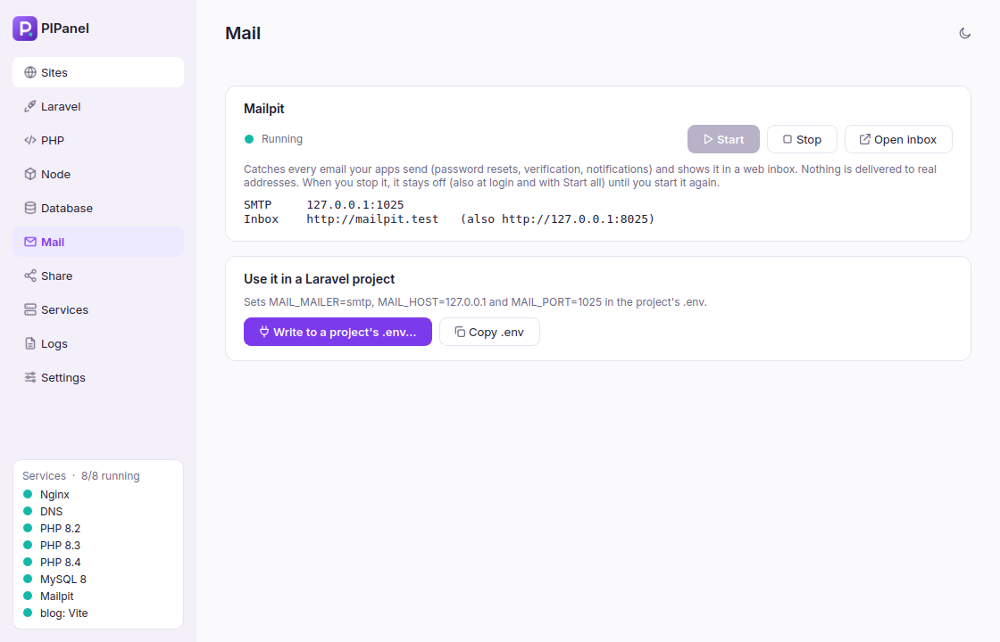
Mailpit (Mail page) catches every email your apps send, such as password resets and notifications, and shows it in an inbox at mailpit.test. Nothing reaches real addresses. Write to a project's .env sets MAIL_MAILER=smtp, MAIL_HOST=127.0.0.1 and MAIL_PORT=1025.
Redis (Database page) runs on 127.0.0.1:6379 for cache, queues, sessions and Horizon. Laravel's default Redis client needs the redis PHP extension (PHP page → Extensions).
The database, Mailpit and Redis start with Start all and at login. If you stop one yourself, it stays off, also at login and with Start all, until you start it again.
Share
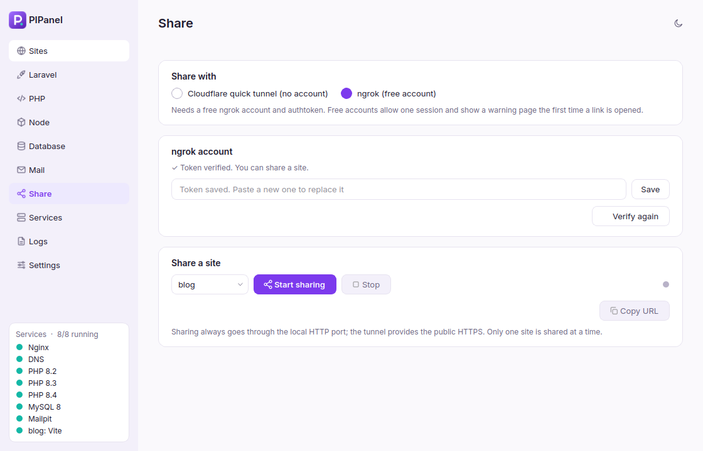
Choose how to share:
- Cloudflare quick tunnel needs no account. You get a random
https://….trycloudflare.comlink, meant for quick demos: it changes every time and has no uptime guarantee. - ngrok needs a (free) account and an authtoken. Save it and PIPanel verifies it by starting ngrok briefly and waiting until ngrok's servers accept it; if they refuse, you see ngrok's own message. Only then does Start sharing become available. Free accounts allow one session at a time and show a warning page the first time a link is opened. Only a fingerprint of your token is remembered by PIPanel.
One site (or proxy) is shared at a time; the public URL appears with a Copy button. The program for the tunnel is downloaded the first time you use it.
Services and Doctor
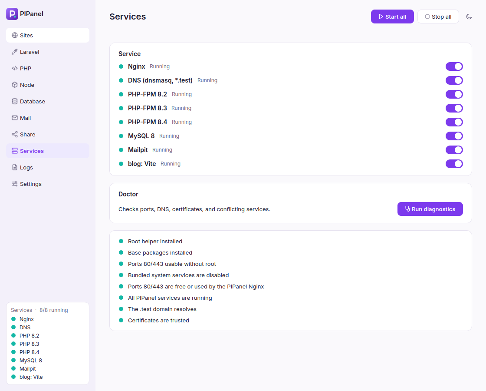
Start or stop Nginx, DNS, each PHP-FPM version, the database, Mailpit, Redis and the background processes, individually or all at once. Start all waits and checks that the services really stay up; if one does not, you get its log lines and, for a port conflict, the name of the program that holds the port.
Doctor checks the root helper, base packages, port access, leftover system services, ports 80/443, whether PIPanel's services run, DNS resolution for .test, and the certificate authority. Problems come with a Fix button where one is possible, including an outdated root helper and a missing backup tool.
When a service crashes, you get a desktop notification with the reason (its last log lines, and which program holds its port) and Restart and Details buttons, plus a banner in the window. A service you stop yourself is not reported. Turn notifications off in Settings.
Logs
Read each Laravel project's laravel.log (the newest daily file when it uses those) with a filter for warnings or errors that keeps whole stack traces, each site's access and error log, PHP-FPM logs, the database log, and the output of Mailpit, Redis, the tunnels and every background process. Enable Auto-refresh to follow a log live, and Clear empties a log file.
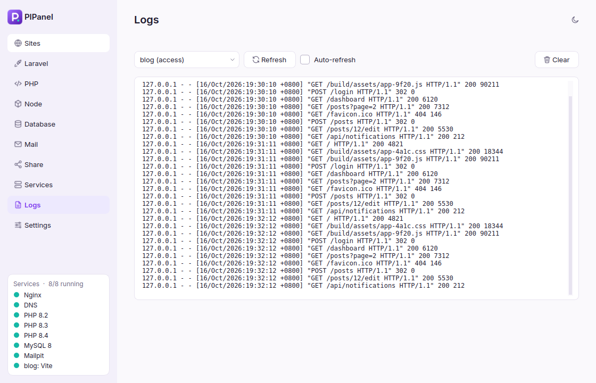
Settings
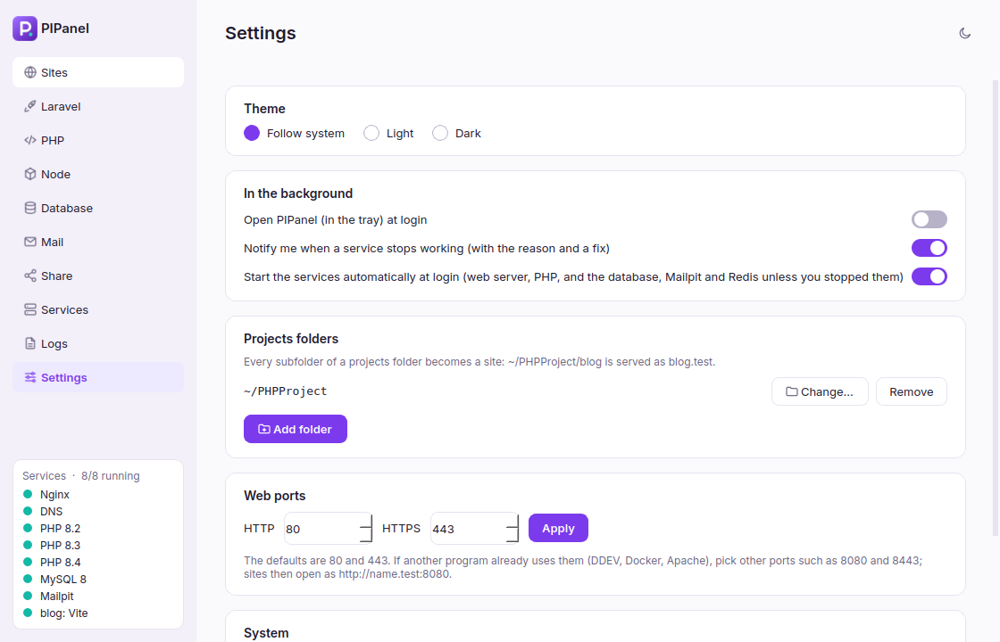
- Theme: follow the system, light, or dark. The button in the corner of every page also switches it.
- In the background: notifications when a service stops working, open PIPanel in the tray at login, and start the services at login (the web server, PHP, and the database, Mailpit and Redis unless you stopped them).
- Projects folders: add, change or remove them.
- Web ports: the defaults are 80 and 443. If another program already uses them (DDEV, Docker, Apache), choose other ports such as 8080 and 8443. Sites then open as
http://name.test:8080.
Background tasks
Installs can take minutes, so they run in the background. A panel at the top lists every task: Running, Waiting (package installs go one at a time because apt allows only one), Done, or Failed with a Details button. Failures stay until you dismiss them.
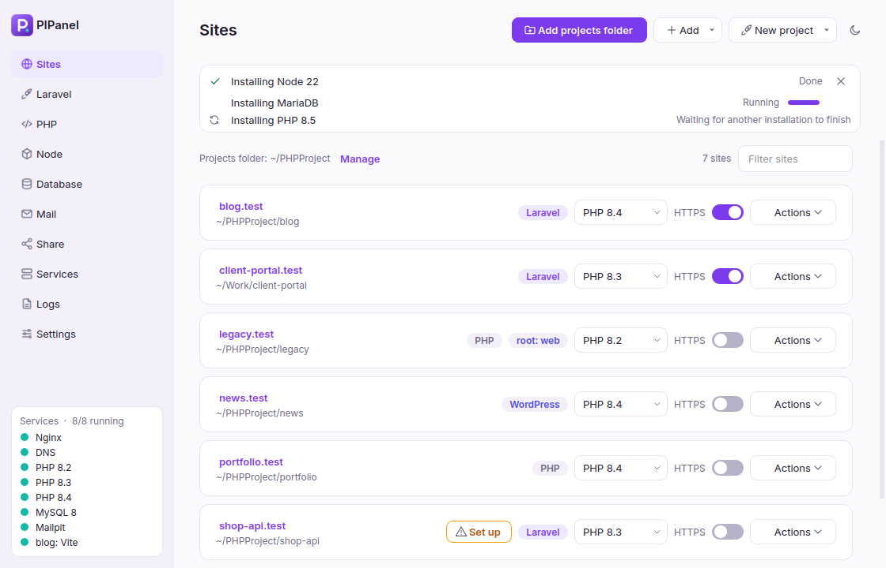
Tray, Ctrl+K and the terminal
Tray menu (right-click the icon): what runs, with Start, Stop and Restart per service; which sites use each PHP version (a count once there are more than two); the default PHP version; your recently opened sites with their quick actions; Mailpit and Adminer; Start all and Stop all.
Ctrl+K opens a search: type a few letters of a site and an action (blog code opens blog in VS Code), or the name of a page or an action such as "Start all services". It is also in the tray menu.
The pipanel command works in any terminal:
$ pipanel status # what runs
$ pipanel sites # every site and its URL
$ pipanel which # the site and PHP version of the current folder
$ pipanel link [name] # serve the current folder
$ pipanel isolate 8.2 # PHP version of the current site
$ pipanel use 8.4 # default PHP version
$ pipanel secure # HTTPS for the current site (unsecure turns it off)
$ pipanel proxy app 3000 # app.test -> 127.0.0.1:3000
$ pipanel share # public URL of the current site (unshare stops it)
$ pipanel start|stop|restart [service]
$ pipanel doctor
$ pipanel sync # serve new project folders nowFiles and security
Where things live
| What | Where |
|---|---|
| Settings | ~/.config/pipanel/config.json |
| Generated Nginx, PHP-FPM, DNS and database config | ~/.config/pipanel/{nginx,php,dns,mysql,mariadb}/ |
| systemd user units | ~/.config/systemd/user/pipanel-*.service, and pipanel-watch.path for new folders |
| Certificates | ~/.config/pipanel/certs/ |
| Database data | ~/.local/share/pipanel/{mysql,mariadb}/ |
Composer, the php, wp and pipanel commands, fnm, Mailpit, ngrok, cloudflared | ~/.local/share/pipanel/bin/ |
| Adminer, phpMyAdmin, Redis data, backups | ~/.local/share/pipanel/{adminer,phpmyadmin,redis,backups}/ |
| Logs | ~/.local/state/pipanel/logs/ |
| Sockets and PID files | $XDG_RUNTIME_DIR/pipanel/ (cleaned at logout) |
| Root helper | /usr/lib/pipanel/pipanel-helper and a polkit policy |
What runs as root
Only the helper, started through pkexec (the normal graphical password dialog). It is owned by root, so it cannot be edited by your user or by other programs, and it accepts only these commands: setup, install-php, remove-php, install-ext, install-database, install-redis, trust-ca, untrust-ca and disable-system-services. Doctor tells you when the installed helper is older than the app; run ./install.sh again to update it. Each argument is validated (for example a PHP version must match 8.N), and the user to configure is taken from the system's PKEXEC_UID, never from arguments. trust-ca only accepts your own mkcert root certificate, and refuses anything that contains a private key.
Everything else, including Nginx, PHP, the database, Redis, Mailpit and the tunnels, runs as you. Mailpit, Adminer and phpMyAdmin answer only requests from this computer.
Uninstall
$ ./uninstall.shRemoves the services, launcher, shell blocks, the root helper and the system files that setup created. System packages (Nginx, PHP, MariaDB and so on) are left alone, and your data stays in ~/.config/pipanel and ~/.local/share/pipanel until you delete it.
FAQ and troubleshooting
The browser says "This site can't be reached" (DNS_PROBE_FINISHED_NXDOMAIN)
PIPanel's DNS or Nginx is not running. Open Sites and click Start services in the banner, or use Services → Start all. If that fails, the message explains why, most often a port conflict (next question). Services → Doctor shows the state of every part.
Start services says port 80 or 443 is already in use
Another program holds the port. PIPanel names it, and it is usually a Docker container such as DDEV's router (ddev poweroff stops it) or Apache. Either stop that program, or move PIPanel to other ports in Settings → Web ports (for example 8080 and 8443).
A new Laravel project shows "Table 'sessions' doesn't exist"
New Laravel projects keep sessions in the database, so the migrations must run once. Creating a project from PIPanel does that for you. For an existing project, open the Laravel page and click Run migrations.
A project I cloned from Git shows an error
A cloned project has no vendor/ folder and no .env (they are not committed). Its card shows Set up: click it to install the dependencies, create .env and APP_KEY, create the database, and migrate or import a dump from the repository.
A new project folder does not appear
The folder watcher serves new folders within seconds. If it does not, run pipanel sync in a terminal, and check that systemctl --user status pipanel-watch.path is active. The watcher follows the "start at login" setting.
PIPanel shows "PIPanel was updated while it was running"
The app's files changed (for example after git pull) while an older copy was still open. Quit PIPanel from the tray menu and open it again.
Is mkcert required?
No. Everything works over plain http://name.test without it. mkcert is only needed for the HTTPS toggle, because it creates certificates your browser trusts without warnings. That matters for secure cookies, OAuth callbacks, service workers and camera access. Install it with sudo apt install mkcert.
Why are all PHP extensions ticked after installing a version?
That is how Ubuntu works: installing a PHP package enables its extensions. The list only shows extensions that are installed. Bold ones are required by Laravel and Composer; untick the others if you want to turn them off.
Do I need an account to share a site?
Not with the Cloudflare quick tunnel. ngrok refuses to start a tunnel without an account's authtoken (error ERR_NGROK_4018). Save the token on the Share page and click Verify token; sharing is enabled only after ngrok accepts it.
Should I choose MySQL or MariaDB?
Choose the one your production server uses. Many shared hosts run MariaDB, while many VPS and cloud setups run MySQL 8. Both work with Laravel, and you can keep both installed and switch (they use separate data folders).
Can I use Apache, or another operating system?
Not at the moment. PIPanel uses Nginx (like Laravel Herd) and has only been tested on Linux Mint 22.3. Ubuntu 22.04 and 24.04 are expected to work; other distributions are not supported. Applications that depend on .htaccess rules need an equivalent Nginx configuration.
Can it run alongside Docker or DDEV?
Yes, as long as they do not use the same ports. They can share the machine, but only one program can listen on port 80 at a time.
Development
$ python3 -m venv .venv
$ .venv/bin/pip install -e '.[ui,dev]'
$ .venv/bin/pytest # no root and no Nginx needed
$ .venv/bin/python tools/screenshots.py # re-render the screenshots in docs/assets/img
$ .venv/bin/python -m pipanelThe code is split on purpose: pipanel/core never imports Qt and is tested without a display; the UI only talks to core.controller.Controller. Services, config and files are written through small modules (services.py, php.py, mysql.py, laravel.py, ngrok.py) that take a fake Runner in tests.
Besides the automated tests, tools/e2e_*.py run the real thing without root: Nginx and PHP-FPM serving a site over HTTP and HTTPS, MySQL and MariaDB logins, Composer, fnm and ngrok, proxies, Mailpit, Adminer and phpMyAdmin, background processes, the folder watcher, and (with E2E_TUNNEL=1 and E2E_WORDPRESS=1) a public Cloudflare tunnel and a WordPress install on a throwaway MariaDB. They use their own unit prefix, so they never touch a real installation.
Read the full design notes in PLAN.md.
Status and known limits
- Tested on Linux Mint 22.3 (Cinnamon, Ubuntu 24.04 base). The automated suite has more than 380 tests; the real-service scripts cover the web stack, both databases, the tools, the folder watcher and the downloads.
- Following the system theme on Cinnamon relies on a
gsettingsfallback because Qt does not report it there. - Cloudflare quick tunnels are tested end to end. The ngrok failure paths (no token, invalid token) are checked against ngrok's servers; a successful ngrok tunnel needs a real account and is exercised by you, not by the tests.
- Installing Redis and the other root helper commands need root, so they are covered by dry-run tests of the helper.
- PostgreSQL is not supported yet.
- Not yet packaged as a
.debor AppImage.